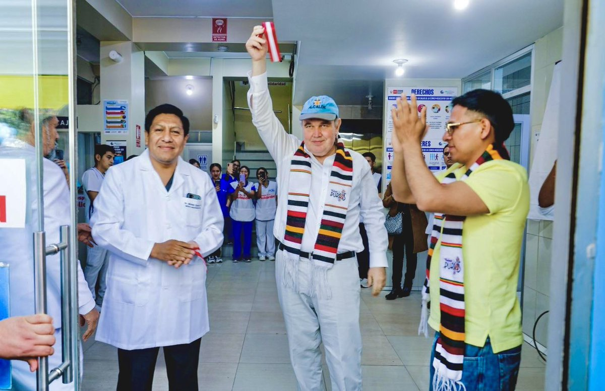

Somos una institución de salud descentralizada comprometida en brindar atención médica especializada y oportuna a la población del distrito de Ate y sus alrededores. Nuestra misión es garantizar un acceso equitativo a servicios médicos de calidad, promoviendo la prevención, el diagnóstico oportuno y el tratamiento eficiente de las enfermedades bajo un esquema de tarifas sociales y un trato profundamente humano.
Buscamos aliviar la carga de la salud pública local trabajando con ética profesional, optimizando la gestión de nuestras especialidades médicas y asegurando que cada paciente reciba una atención digna que proteja su bienestar integral.